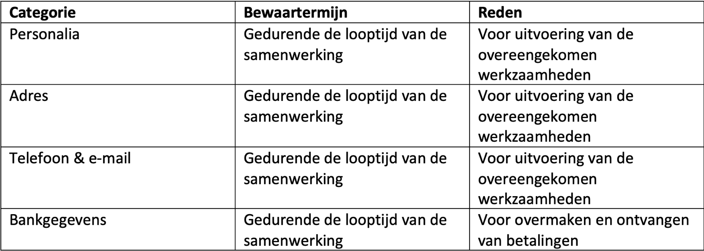

Privacyverklaring
Méér dan Woorden, tekst & beeld
is verantwoordelijk voor de verwerking van persoonsgegevens zoals weergegeven in deze privacyverklaring.
Contactgegevens Méér dan Woorden:
Scholeksterstraat 37
4332 CE Middelburg
info@meerdanwoorden.com
www.meerdanwoorden.com
Marjan de Kort is de functionaris gegevensbescherming van Méér dan Woorden, tekst & beeld. Zij is te bereiken via info@meerdanwoorden.com
Persoonsgegevens die wij verwerken
Méér dan Woorden, tekst & beeld verwerkt uw persoonsgegevens doordat u gebruik maakt van onze diensten en/of omdat u deze zelf aan ons verstrekt. Hieronder vindt u een overzicht van de persoonsgegevens die wij verwerken:
- Voor- en achternaam
- Telefoonnummer
- E-mailadres
- Overige persoonsgegevens die u actief verstrekt bijvoorbeeld door correspondentie, telefonisch en/of door een profiel op deze website aan te maken.
Bijzondere en/of gevoelige persoonsgegevens die wij verwerken
Onze website en/of dienst heeft niet de intentie gegevens te verzamelen over websitebezoekers die jonger zijn dan 16 jaar, tenzij ze toestemming hebben van ouders of voogd. We kunnen echter niet controleren of een bezoeker ouder dan 16 is. Wij raden ouders dan ook aan betrokken te zijn bij de online activiteiten van hun kinderen, om zo te voorkomen dat er gegevens over kinderen verzameld worden zonder ouderlijke toestemming. Als u er van overtuigd bent dat wij zonder die toestemming persoonlijke gegevens hebben verzameld over een minderjarige, neem dan contact met ons op via info@meerdanwoorden.com, dan verwijderen wij deze informatie.
Met welk doel en op basis van welke grondslag wij persoonsgegevens verwerken
Méér dan Woorden, tekst & beeld verwerkt uw persoonsgegevens voor de volgende doelen:
- U te kunnen bellen of e-mailen indien dit nodig is om onze dienstverlening uit te kunnen voeren
- Het afhandelen van uw betaling aan Méér dan Woorden cq. onze betaling aan u
- Verzenden van onze nieuwsbrief en/of reclamefolder
- Om goederen en diensten bij u af te leveren
- Aan onze wettelijke verplichtingen te voldoen, zoals die ten behoeve van onze belastingaangifte.
Geautomatiseerde besluitvorming
Méér dan Woorden, tekst & beeld neemt niet op basis van geautomatiseerde verwerkingen besluiten over zaken die (aanzienlijke) gevolgen kunnen hebben voor personen. Het gaat hier om besluiten die worden genomen door computerprogramma’s of -systemen, zonder dat daar een mens (bijvoorbeeld een medewerker van Méér dan Woorden, tekst & beeld) tussen zit. Méér dan Woorden, tekst & beeld gebruikt de volgende computerprogramma’s of -systemen:
- Windows Mail App voor e-mail communicatie en beheer e-mail adressen
- Delta e-mail voor e-mail communicatie en beheer e-mail adressen
- Microsoft Word voor tekstverwerking
- WordPress CMS voor beheer website
- PC Extreme voor hosting en beveiliging website
- Bitdefender voor bestands- en internetbeveiliging (firewall, anti virus, safepay, bestandsbeveiliging, anti spam, wifi beveiliging, advanced threat defence, beveiliging online bedreigingen)
- Bankaccounts bij ABNAMRO voor ontvangen en overmaken van betalingen.
Hoe lang we persoonsgegevens bewaren
Méér dan Woorden, tekst & beeld bewaart uw persoonsgegevens niet langer dan strikt noodzakelijk is om de doelen te realiseren waarvoor uw gegevens worden verzameld. Wij hanteren de volgende bewaartermijnen voor de volgende (categorieën) van persoonsgegevens:

Delen van persoonsgegevens met derden
Méér dan Woorden, tekst & beeld verkoopt uw gegevens niet aan derden en verstrekt deze uitsluitend indien dit nodig is voor de uitvoering van onze overeenkomst met u of om te voldoen aan een wettelijke verplichting. Met bedrijven die uw gegevens verwerken in onze opdracht, sluiten wij een bewerkersovereenkomst om te zorgen voor eenzelfde niveau van beveiliging en vertrouwelijkheid van uw gegevens. Méér dan Woorden, tekst & beeld blijft verantwoordelijk voor deze verwerkingen.
Cookies, of vergelijkbare technieken, die wij gebruiken
Méér dan Woorden, tekst & beeld gebruikt alleen technisch-functionele cookies en analytische cookies die geen inbreuk maken op uw privacy. Een cookie is een klein tekstbestand dat bij het eerste bezoek aan deze website wordt opgeslagen op uw computer, tablet of smartphone. De cookies die wij gebruiken zijn noodzakelijk voor de technische werking van de website en uw gebruiksgemak. Ze zorgen ervoor dat de website naar behoren werkt en onthouden bijvoorbeeld uw voorkeursinstellingen. Ook kunnen wij hiermee onze website optimaliseren. U kunt zich afmelden voor cookies door uw internetbrowser zo in te stellen dat deze geen cookies meer opslaat. Daarnaast kunt u ook alle informatie die eerder is opgeslagen via de instellingen van uw browser verwijderen.
Gegevens inzien, aanpassen of verwijderen
U heeft het recht om uw persoonsgegevens in te zien, te corrigeren of te verwijderen. Daarnaast heeft u het recht om uw eventuele toestemming voor de gegevensverwerking in te trekken of bezwaar te maken tegen de verwerking van uw persoonsgegevens door Méér dan Woorden, tekst & beeld en heeft u het recht op gegevensoverdraagbaarheid. Dat betekent dat u bij ons een verzoek kunt indienen om de persoonsgegevens die wij van u bewaren in een computerbestand naar u of een ander, door u genoemde organisatie, te sturen.
U kunt een verzoek tot inzage, correctie, verwijdering, gegevensoverdraging van uw persoonsgegevens of verzoek tot intrekking van uw toestemming of bezwaar op de verwerking van uw persoonsgegevens sturen naar info@meerdanwoorden.com.
Om er zeker van te zijn dat het verzoek tot inzage door u is gedaan, vragen wij u een kopie van uw identiteitsbewijs met het verzoek mee te sturen. Maak in deze kopie uw pasfoto, MRZ (machine readable zone, de strook met nummers onderaan het paspoort), paspoortnummer en Burgerservicenummer (BSN) zwart. Dit ter bescherming van uw privacy. We reageren zo snel mogelijk, maar binnen vier weken, op uw verzoek.
Méér dan Woorden, tekst & beeld wil u er tevens op wijzen dat u de mogelijkheid heeft om een klacht in te dienen bij de nationale toezichthouder, de Autoriteit Persoonsgegevens. Dat kan via de volgende link: https://autoriteitpersoonsgegevens.nl/nl/contact-met-de-autoriteit-persoonsgegevens/tip-ons
Hoe wij persoonsgegevens beveiligen
Méér dan Woorden, tekst & beeld neemt de bescherming van uw gegevens serieus en neemt passende maatregelen om misbruik, verlies, onbevoegde toegang, ongewenste openbaarmaking en ongeoorloofde wijziging tegen te gaan. Als u de indruk heeft dat uw gegevens niet goed beveiligd zijn of er aanwijzingen zijn van misbruik, neem dan contact op met onze klantenservice of via info@meerdanwoorden.com
© Méér dan Woorden, tekst & beeld – oktober 2020.